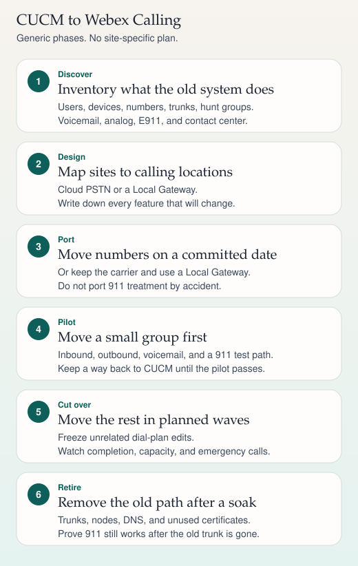

Dual run
CUCM toward Webex Calling
Move a number only when identity, emergency location, and recording have a place to land.
- Still home — The number still registers on CUCM. Inbound stays there.
- Canary — A pilot user moves. Outbound and inbound are tested, including emergency callback.
- Rollback — The trigger to move the number back is written before the cut, not during it.
A dial plan that globalizes to +E.164 on both sides is what makes the dual-run readable. Extension-only habits hide which system owns the call.
Sources
Study card carried forward
Migration
CUCM to Webex Calling
Six phases cover the move from an on-premises call manager to Webex Calling. The card is generic on purpose. Your dates, carriers, and feature gaps are the actual project.

On a phone, swipe a wide ladder sideways. The steps below repeat the same sequence.
Discovery
Write down what the current CUCM actually does, not what the original design binder claimed. Include users and devices, directory numbers, PSTN numbers, sites, trunks, hunt and pickup groups, call park, auto attendants, voicemail, analog and fax, paging, recording, contact center, the dial plan and class of service, and how 911 is delivered today. Note integrations such as directory, single sign-on, and calendaring only as dependencies you must retest.
Design
Webex Calling places users in locations. A location has an address, a main number, and a PSTN choice. Two PSTN patterns are common:
- Cloud PSTN, where a calling provider terminates numbers in the cloud.
- Local Gateway, a supported session border controller (often Cisco CUBE) that connects premises PSTN, or a remaining CUCM, to Webex Calling.
Map each CUCM site to a location only after you know the emergency address, the outbound dialing habits, and what happens if the path to the cloud is down. List features that will not move as-is. Survivable remote telephony on CUCM is not the same mechanism as site survivability on the cloud service. Confirm the current Webex Calling survivability option in Cisco's docs rather than assuming the CUCM feature comes along.
Many Cisco desk phones need Multiplatform firmware, or a different phone, before they register to Webex Calling. Confirm the device list for the version you will run. Softphone users move to the Webex App.
Number porting
Decide per number block. Porting moves the number to a new carrier on a firm order date, after a letter of authorization. Keeping the number at the current carrier and hairpinning through a Local Gateway avoids a port but leaves the old trunk in the design. Do not include emergency test numbers or ranges you do not own. Publish the user-visible dialing changes before the port date: access codes, caller ID, and what overseas calling requires.
Pilot
Move one team or one small site. Test inbound and outbound, internal extension dialing, voicemail deposit and retrieval, hunt groups you actually use, and emergency calling on the provider's test number (many U.S. providers use 933 and do not dispatch; confirm that before you dial it). Keep the CUCM registration path until the pilot's exit criteria pass. A pilot that cannot return is a cutover.
Cutover
Move by site or by number block. Freeze unrelated dial-plan and trunk changes during the window. Watch call completion, trunk capacity, and the emergency path. Tell the people on the desk what "working" means: they can call a known internal extension, a known external number, and they know how to report a failed inbound call.
Decommission
After a soak, remove unused trunks, gateways, CUCM nodes, DNS names that existed only for the old cluster, and certificates you no longer need. Export the dial plan and emergency location records you are required to keep. Place one more emergency test on the surviving path after the old trunk is gone. Retiring CUCM while 911 still pointed at it is a failed migration no matter how clean the user calls look.
Sources
- Cisco Webex Calling documentation: locations, Local Gateway, and device support
- Cisco Unified Communications Manager administration guides, for the system you are leaving
- Kari's Law and RAY BAUM'S Act Section 506, for the emergency-calling duties you must redesign rather than assume